Fig: Talk (Redwood-16th)#
# HIDE CODE
import os, sys
from IPython.display import display
# tmp & extras dir
git_dir = os.path.join(os.environ['HOME'], 'Dropbox/git')
extras_dir = os.path.join(git_dir, 'jb-MTMST/_extras')
fig_base_dir = os.path.join(git_dir, 'jb-MTMST/figs')
tmp_dir = os.path.join(git_dir, 'jb-MTMST/tmp')
# GitHub
sys.path.insert(0, os.path.join(git_dir, '_MTMST'))
from vae.train_vae import TrainerVAE, ConfigTrainVAE
from vae.vae2d import VAE, ConfigVAE
from figures.fighelper import *
from analysis.glm import *
# warnings, tqdm, & style
warnings.filterwarnings('ignore', category=DeprecationWarning)
from rich.jupyter import print
%matplotlib inline
set_style()
from base.dataset import ROFLDS
from analysis.linear import compute_dci, mi_analysis
from figures.dci import plot_scatter
from figures.mi import plot_hm
from analysis.latent import traverse
from utils.animation import animate_opticflow
from analysis.opticflow import ROFL
kws_fig = {
'transparent': True,
'bbox_inches': 'tight',
'dpi': 300,
}
pal_model, pal_cat = get_palette()
Previous figs#
category = 'fixate1'
g, select_lbl = prep_rofl(category)
path = pjoin(tmp_dir, 'trainer_analysis')
fits = [
'fixate1_nf-420_beta-0.15_(2023_04_27,20:20).npy',
'vanilla_fixate1_nf-420_beta-1.5_(2023_05_14,14:16).npy',
]
everything = {}
for fit in fits:
everything[fit] = np.load(
pjoin(path, fit),
allow_pickle=True,
).item()
Untang (scatter plot)#
fig, _ = plot_scatter(everything)

for dpi in [600, 300]:
kws_fig['dpi'] = dpi
fig.savefig(pjoin(fig_base_dir, f'untang_dpi{dpi}.png'), **kws_fig)
MI (heatmap)#
%%time
mi = {}
for fit, v in everything.items():
mi[fit] = mi_analysis(v['data_vld']['z'], g['vld'])
data = {
extract_info(k)[-1]: v['mi']
for k, v in mi.items()
}
CPU times: user 24.5 s, sys: 19.6 s, total: 44.2 s
Wall time: 5min 57s
fig, _ = plot_hm(data)

fig.savefig(pjoin(fig_base_dir, 'mi.pdf'), **kws_fig)
Load trainers#
tr = {
'cNVAE': 'fixate1_nf-420_beta-0.15_(2023_04_27,20:20)',
'VAE': 'vanilla_fixate1_nf-420_beta-0.15_(2023_05_02,15:15)',
}
tr = {
k: load_model_lite(
pjoin(results_dir(), v, 'Trainer'),
shuffle=False,
strict=False,
device='cpu',
)[0] for k, v in tr.items()
}
Recon. plot#
x = tr['cNVAE'].dl_trn.dataset.x[:tr['cNVAE'].cfg.batch_size]
show_opticflow(x);
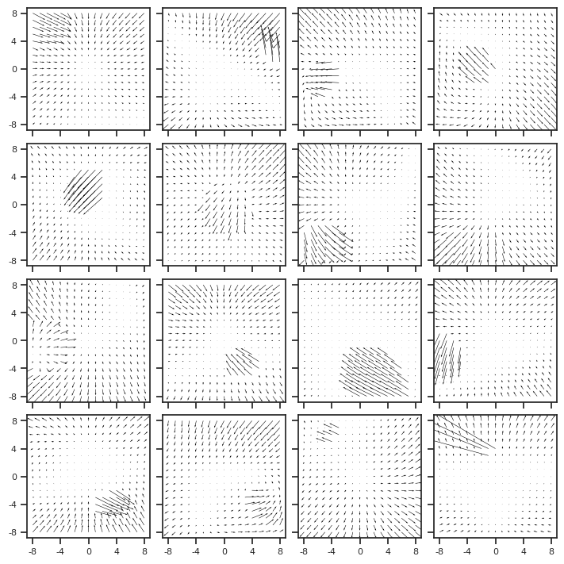
with torch.no_grad():
x_hat = {
k: v.model(x)[0] for
k, v in tr.items()
}
for k, v in x_hat.items():
fig, _ = show_opticflow(v, display=False);
fig.suptitle(k, y=1.05, fontsize=15)
display(fig)
 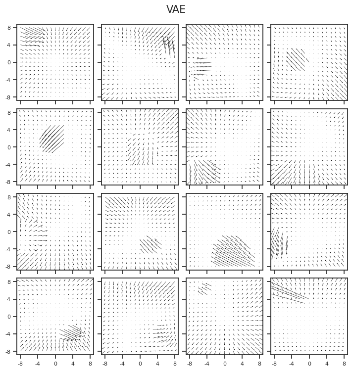
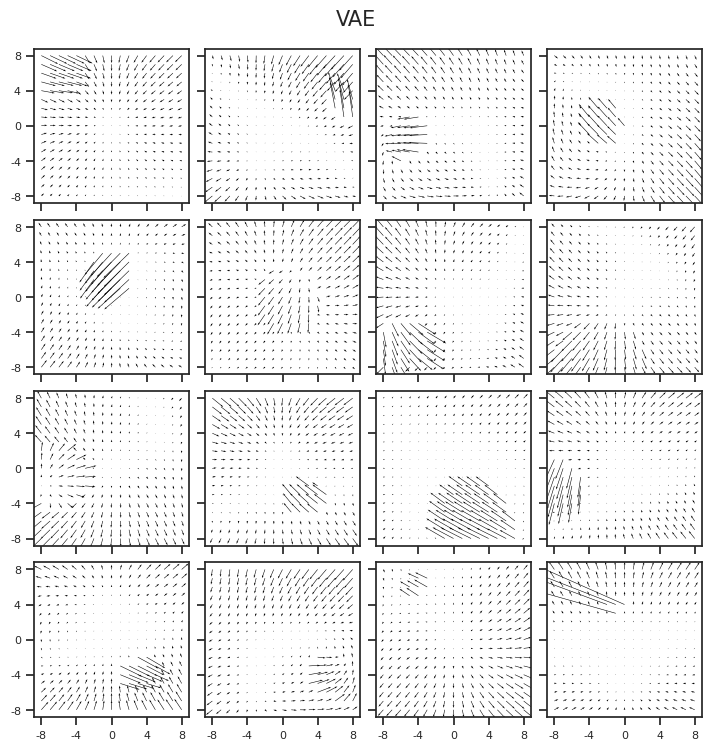
ids = [3, 8, 14, 1, 10]
x2p = torch.stack((
x[ids],
x_hat['cNVAE'][ids],
x_hat['VAE'][ids],
))
fig, axes = show_opticflow_row(x2p, figsize=(9.5, 5.57), display=False)
axes[0, 0].set_ylabel('Sample', fontsize=15)
axes[1, 0].set_ylabel('cNVAE', fontsize=15)
axes[2, 0].set_ylabel('VAE', fontsize=15)
display(fig)
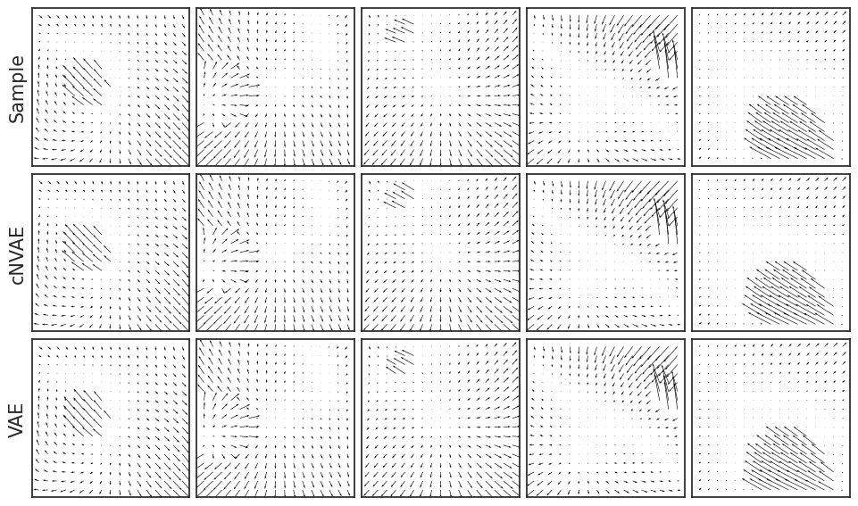
fig.savefig(pjoin(fig_base_dir, 'recon.pdf'), **kws_fig)
z-Traverse#
x = tr['cNVAE'].dl_trn.dataset.x[:tr['cNVAE'].cfg.batch_size]
z, *_ = tr['cNVAE'].model.xtract_ftr(x)
%%time
x_gen = traverse(
z=z,
steps=50,
vae=tr['cNVAE'].model,
group_i=0,
latent_i=2,
mu=0.1701,
sd=0.4481,
n_sd=6,
)
x_gen.shape
CPU times: user 15min 1s, sys: 450 ms, total: 15min 2s
Wall time: 34.7 s
(600, 50, 2, 17, 17)
sample_i = 117
show_opticflow(x_gen[sample_i], 7);
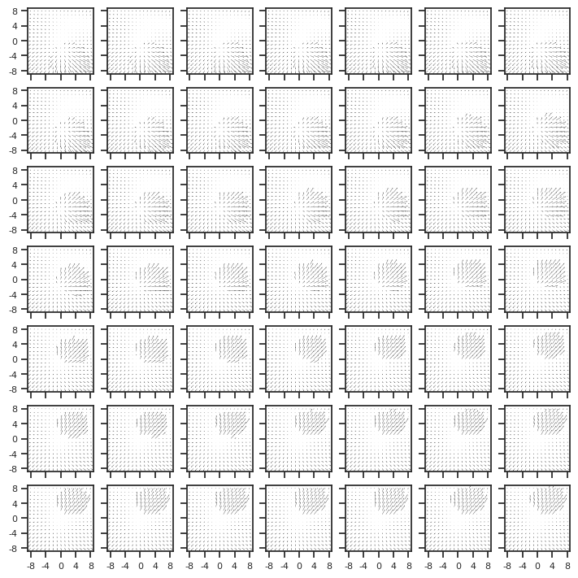
inds = [
3, 5, 31, 45, 53, 117,
118, 187, 197, 236, 424,
]
x2a = x_gen[inds]
save_file = pjoin(fig_base_dir, 'anim', 'test.mp4')
_ = animate_opticflow(x2a, save_file, nrows=3)
for i in inds:
save_file = pjoin(fig_base_dir, 'anim', f'sample_{i}.mp4')
ani, writer = animate_opticflow(
x=x_gen[[i]][:, :45],
save_file=save_file,
title=f'sample_{i}',
)
inds = [187, 117, 3]
title = f'samples_{inds}'.replace(' ', '')
save_file = pjoin(fig_base_dir, 'anim', f"{title}.mp4")
ani, writer = animate_opticflow(
x=x_gen[inds][:, :45],
save_file=save_file,
title=title,
)
x2p = x_gen[inds][:, :45]
n, frames, _, _, d = x2p.shape
d, odd = x.shape[-2] // 2, x.shape[-2] % 2
span = range(-d, d + 1) if odd else range(-d, d)
for idx, i in enumerate(inds):
fig, ax = create_figure(1, 1, (2.4, 2.4))
u, v = x2p[idx, 0, 0, ...], x2p[idx, 0, 1, ...]
vel = ax.quiver(
span, span, u, v,
scale=None,
)
remove_ticks(ax, False)
ax_square(ax)
plt.close()
save_file = pjoin(fig_base_dir, 'anim', f'sample_{i}.pdf')
fig.savefig(save_file, **kws_fig)
g-Traversal#
kws = dict(
category='fixate',
n_obj=1,
dim=17,
fov=45.0,
obj_r=0.25,
obj_bound=0.97,
obj_zlim=(0.5, 1.0),
vlim_obj=(0.01, 1.0),
vlim_slf=(0.01, 1.0),
residual=False,
z_bg=1.0,
seed=0,
)
print(kws)
min_obj_size = 3.5
{ 'category': 'fixate', 'n_obj': 1, 'dim': 17, 'fov': 45.0, 'obj_r': 0.25, 'obj_bound': 0.97, 'obj_zlim': (0.5, 1.0), 'vlim_obj': (0.01, 1.0), 'vlim_slf': (0.01, 1.0), 'residual': False, 'z_bg': 1.0, 'seed': 0 }
Just obj, no self motion#
n = 17
rofl = ROFL(n=n, **kws).compute_coords()
attrs_slf = {
'fix': np.zeros((n, 2)),
'v_slf': np.zeros((n, 3)),
}
# Obj related
alpha = np.array([0, rofl.span[4]])
alpha = np.repeat(alpha.reshape(1, -1), n, 0)
alpha[:, 0] = rofl.span
v_obj = np.array([0.8, 0.5, 0])
v_obj = np.repeat(v_obj.reshape(1, -1), n, 0)
attrs_obj = {0: {
'alpha': alpha,
'v_obj': v_obj,
'z': np.ones(n) * 0.55,
}}
rofl.setattrs(attrs_slf, attrs_obj)
_ = rofl.compute_flow()
scale = 20
save_file = pjoin(fig_base_dir, 'anim', 'objx.mp4')
ani, writer = animate_opticflow(
x=rofl.alpha_dot,
save_file=save_file,
title='objx',
scale=scale,
)
show_opticflow(rofl.alpha_dot);
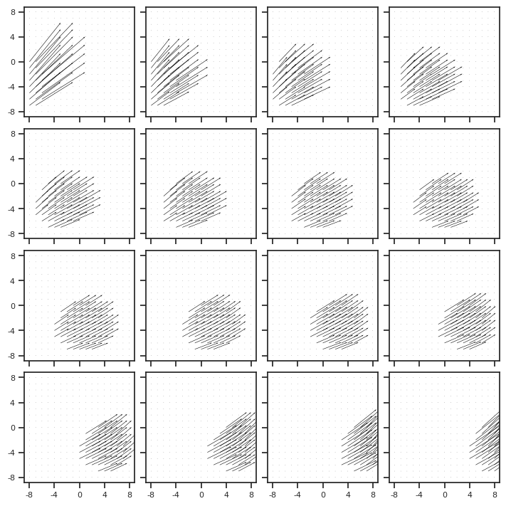
add v self#
v_slf = np.array([0, 0, 1])
v_slf = np.repeat(v_slf.reshape(1, -1), n, 0)
attrs_slf['v_slf'] = v_slf
rofl2 = ROFL(n=n, **kws).compute_coords()
rofl2.setattrs(attrs_slf, attrs_obj)
_ = rofl2.compute_flow()
scale = 20
save_file = pjoin(fig_base_dir, 'anim', 'objx+vslfz.mp4')
ani, writer = animate_opticflow(
x=rofl2.alpha_dot,
save_file=save_file,
title='objx+vslfz',
scale=scale,
)
save_file = pjoin(fig_base_dir, 'anim', 'vself_effect.mp4')
ani, writer = animate_opticflow(
x=np.stack([rofl.alpha_dot, rofl2.alpha_dot]),
save_file=save_file,
title='v_self effect',
scale=scale,
)
show_opticflow(rofl2.alpha_dot);
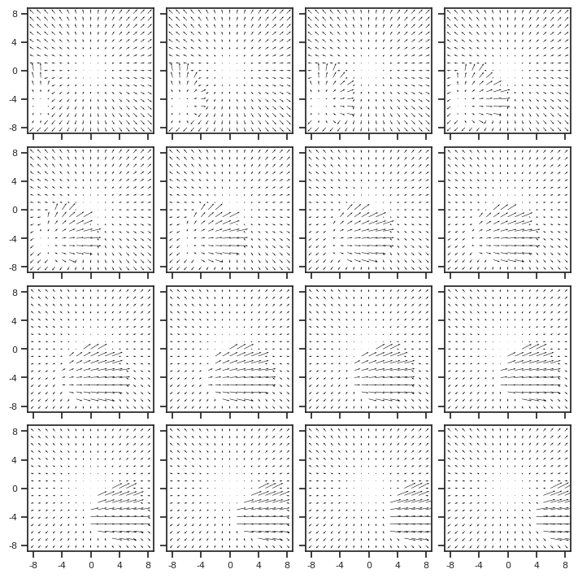
F_x effect#
fix = np.zeros((n, 2))
fix[:, 0] = np.linspace(-0.4, 0.4, n)
attrs_slf['fix'] = fix
i = 4
alpha = np.array([rofl.span[i], rofl.span[4]])
alpha = np.repeat(alpha.reshape(1, -1), n, 0)
attrs_obj = {0: {
'v_obj': v_obj,
'alpha': alpha,
'z': np.ones(n) * 0.55,
}}
rofl3 = ROFL(n=n, **kws).compute_coords()
rofl3.setattrs(attrs_slf, attrs_obj)
_ = rofl3.compute_flow()
scale = 15
save_file = pjoin(fig_base_dir, 'anim', 'fixx.mp4')
ani, writer = animate_opticflow(
x=rofl3.alpha_dot,
save_file=save_file,
title='fixx',
scale=scale,
)
show_opticflow(rofl3.alpha_dot);
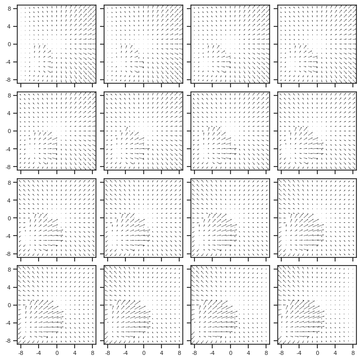
generate single frames#
Self + Obj#
n = 1
rofl = ROFL(n=n, **kws).compute_coords(np.array([0, 0]))
attrs_slf = {
'fix': np.array([[0, 0]]),
'v_slf': np.array([[0, 0, 1]]),
}
attrs_obj = {0: {
'v_obj': np.array([[0.8, 0.5, 0]]),
'alpha': np.array([[rofl.span[4], rofl.span[4]]]),
'z': np.ones(n) * 0.55,
}}
rofl.setattrs(attrs_slf, attrs_obj)
_ = rofl.compute_flow()
scale = 15
fig, ax = show_opticflow(rofl.alpha_dot, 1, scale=scale, display=False, figsize=(3, 3))
remove_ticks(ax, False)
fig.savefig(pjoin(fig_base_dir, 'motion_self+obj.pdf'), **kws_fig)
display(fig)
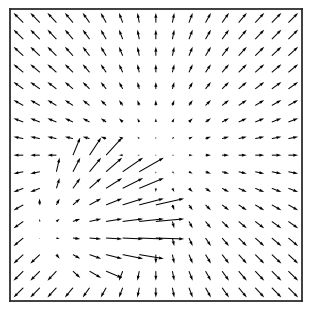
Obj only#
n = 1
rofl = ROFL(n=n, **kws).compute_coords(np.array([0, 0]))
attrs_slf = {
'fix': np.array([[0, 0]]),
'v_slf': np.array([[0, 0, 0]]),
}
attrs_obj = {0: {
'v_obj': np.array([[0.8, 0.5, 0]]),
'alpha': np.array([[rofl.span[4], rofl.span[4]]]),
'z': np.ones(n) * 0.55,
}}
rofl.setattrs(attrs_slf, attrs_obj)
_ = rofl.compute_flow()
scale = 15
fig, ax = show_opticflow(rofl.alpha_dot, 1, scale=scale, display=False, figsize=(3, 3))
remove_ticks(ax, False)
fig.savefig(pjoin(fig_base_dir, 'motion_obj.pdf'), **kws_fig)
display(fig)
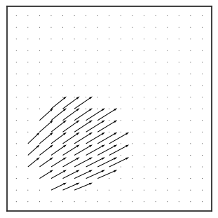
Self only#
n = 1
kws['n_obj'] = 0
rofl = ROFL(n=n, **kws).compute_coords(np.array([0, 0]))
attrs_slf = {
'fix': np.array([[0, 0]]),
'v_slf': np.array([[0, 0, 1]]),
}
rofl.setattrs(attrs_slf)
_ = rofl.compute_flow()
scale = 15
fig, ax = show_opticflow(rofl.alpha_dot, 1, scale=scale, display=False, figsize=(3, 3))
remove_ticks(ax, False)
fig.savefig(pjoin(fig_base_dir, 'motion_self.pdf'), **kws_fig)
display(fig)
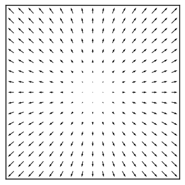
Sample \(5 \times 3 = 15\)#
n = 9
kws['n_obj'] = 1
kws['seed'] = 108
rofl = ROFL(n=n, **kws).compute_coords()
rofl.compute_flow();
fig, axes = show_opticflow_row(rofl.alpha_dot.reshape(3, 3, 17, 17, 2), figsize=(5, 5))
fig.savefig(pjoin(fig_base_dir, 'rofl_9_samples.pdf'), **kws_fig)
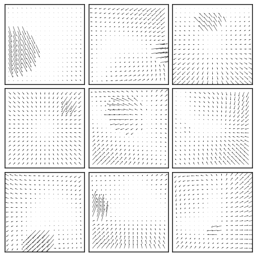
EPE only plot#
from analysis.linear import compute_dci
path = pjoin(tmp_dir, 'trainer_analysis')
skip_fits = [
'fixate1_nf-420_beta-0.001_(2023_05_16,00/03).npy',
'fixate1_nf-420_beta-0.8_(2023_05_07,04:15).npy',
]
pal_model, pal_cat = get_palette()
df_dci = collections.defaultdict(list)
for fit in tqdm(sorted(os.listdir(path))):
if 'reservoir' in fit or fit in skip_fits:
continue
if fit in skip_fits:
continue
category, nf, beta, tag = extract_info(fit)
if beta in [0.001, 20.0]:
continue
if category != 'fixate1':
continue
# load
everything = np.load(
pjoin(path, fit),
allow_pickle=True,
).item()
# info
df_dci['model'].append(tag)
df_dci['category'].append(category)
df_dci['beta'].append(beta)
df_dci['nf'].append(nf)
# losses
epe = everything['loss']['epe'].mean()
df_dci['epe'].append(epe)
df_dci['epepd'].append(epe / 17 ** 2)
if isinstance(beta, float):
kl = everything['loss']['kl'].mean()
tot_active = (everything['loss']['kl_diag'] > 0.1).sum()
else:
kl = np.nan
tot_active = np.nan
df_dci['nelbo'].append(epe + kl)
df_dci['kl'].append(kl)
df_dci['tot_active'].append(tot_active)
df_dci = pd.DataFrame(df_dci)
betas = get_betas(df_dci)
100%|███████████████████████████████████████████| 88/88 [05:14<00:00, 3.57s/it]
_df = df_dci.loc[df_dci['category'] == 'fixate1']
loss = 'epepd'
fig, ax = create_figure(1, 1, (8, 5))
sns.pointplot(
data=_df,
y=loss,
x='beta',
hue='model',
hue_order=pal_model,
palette=pal_model,
order=betas,
dodge=True,
ax=ax,
)
ax.set_ylabel(loss.upper(), fontsize=15)
ax.set_xlabel(r'$\beta$', fontsize=15)
ax.tick_params(axis='x', rotation=-90)
sns.move_legend(ax, 'lower right', fontsize=14)
ax.set_yscale('log')
ax.grid()
plt.show()
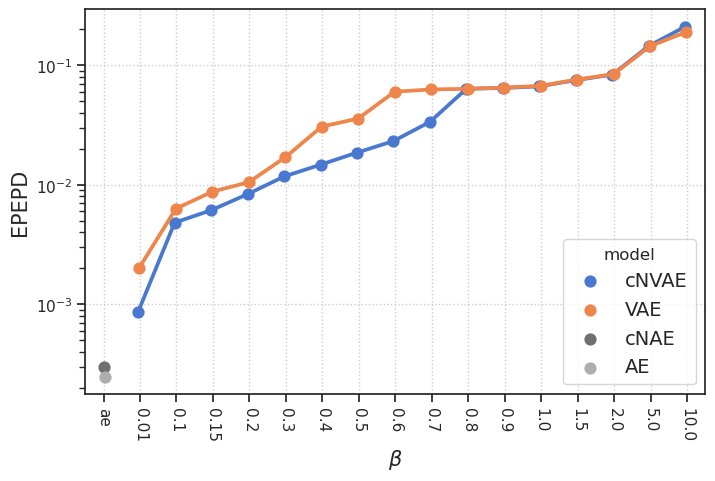
fig.savefig(pjoin(fig_base_dir, 'epepd.pdf'), **kws_fig)